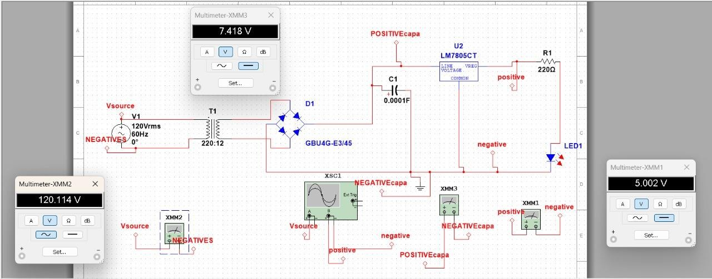
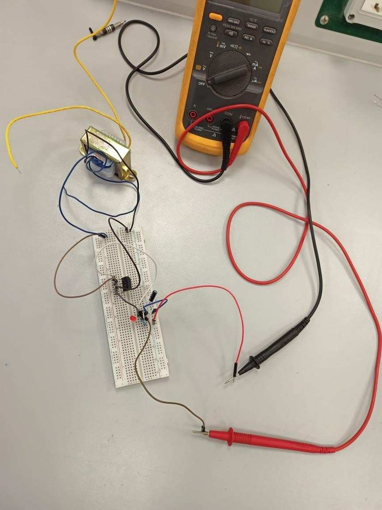
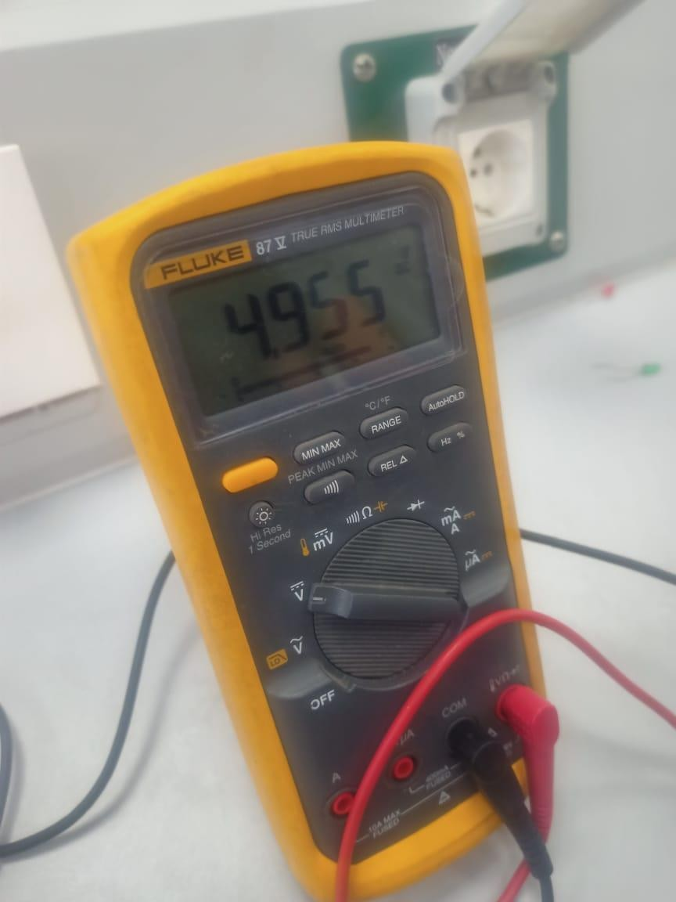

Transformer-Based 5 V Regulated DC Power Supply
Design, circuit simulation, and breadboard implementation of a low-voltage DC supply. This group project demonstrates the path from an AC transformer and rectifier to a filtered, regulated output, then compares the simulated voltage with a physical multimeter reading.
Project at a glance
The simulated circuit displays a 5.002 V DC output, while the photograph of the physical setup shows approximately 4.955 on its meter. The report does not provide a complete measurement log, uncertainty analysis, or repeatability tests, so these are individual documented observations rather than a verified tolerance specification.
1. Circuit operation and simulation
The documented electrical chain consists of an AC input, a step-down transformer, diode-bridge rectification, a smoothing capacitor, an LM7805CT voltage regulator, and an LED/load resistor. Each stage serves a different purpose: voltage reduction, AC-to-DC conversion, ripple reduction, output regulation, and load indication.

2. Prototype construction
The physical assembly uses a transformer connected to a breadboard circuit, with a digital multimeter and test leads for measurement. The report's component list explains the functions of the transformer, capacitor, regulator, resistor and test board.

3. Experimental output measurement
The close-up multimeter photograph provides the main reported physical result. Its screen reads approximately 4.955, near the nominal 5 V target. The photograph alone does not establish calibration status or measurement uncertainty.

4. Engineering workflow
- Define the regulated low-voltage DC output objective.
- Assemble the transformer, bridge rectifier, smoothing capacitor, voltage regulator and indicator load in a circuit simulation.
- Examine the simulated input, intermediate and output voltage readings.
- Construct the circuit on a breadboard with the laboratory transformer and associated components.
- Measure the physical output voltage and compare it with the simulation screenshot.
Scope and limitations
The submitted five-page report contains the three visual records above and a short component explanation. It does not contain native simulation/source files, schematics with fully specified component tolerances, ripple measurements, load tests or code; none have been invented for this portfolio.
Project files
Review the original report, including all three images and the documented component notes. A separate source-code download is intentionally omitted because no executable source file was supplied.
Academic group project · Asmaa Sapry and teammates · Original source: Analog and Digital Electronics (SPC 227), five-page project report. Figures reproduced from the submitted document; performance observations are not independently validated.